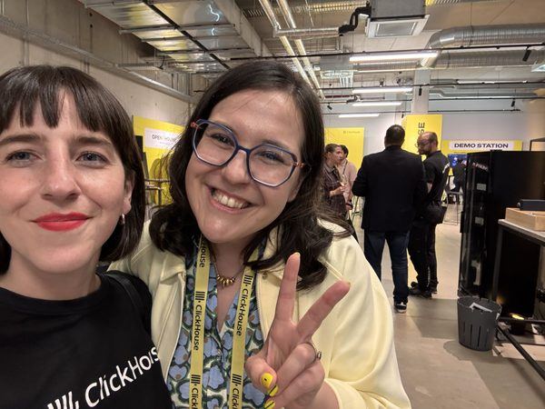
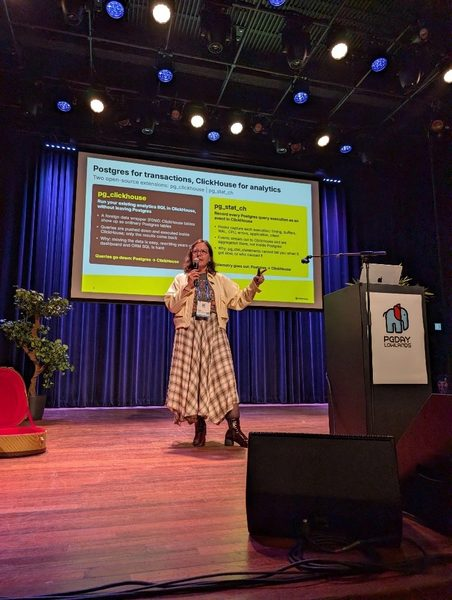
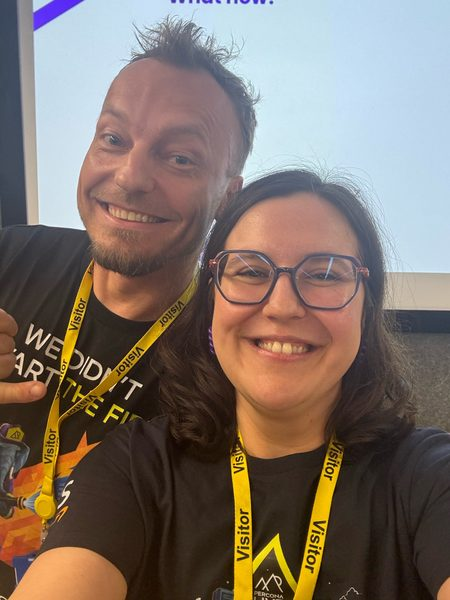

Conference talks, keynotes and community events.



Memories →Speak at Prague PostgreSQL Meetup. I organise the Prague PostgreSQL Meetup and we’re always looking for speakers: first-timers welcome, Postgres or anything data and databases. Send me your idea.
Please include a talk idea, ideally a short abstract, a short speaker bio and your LinkedIn URL.
I'd love to join your conference, podcast, panel, keynote or meetup.
Topics: PostgreSQL internals (table-level locks, constraints, monitoring & observability), zero-downtime schema changes, Postgres on Kubernetes and in the cloud, Postgres + analytics, vectors & RAG with pgvector, databases in the age of AI agents, product management for databases (building and launching managed Postgres), and building diverse tech communities.
Languages: English, Türkçe